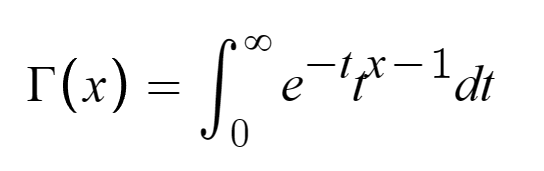
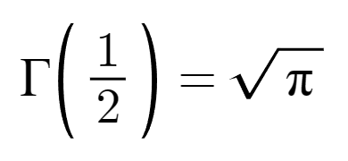
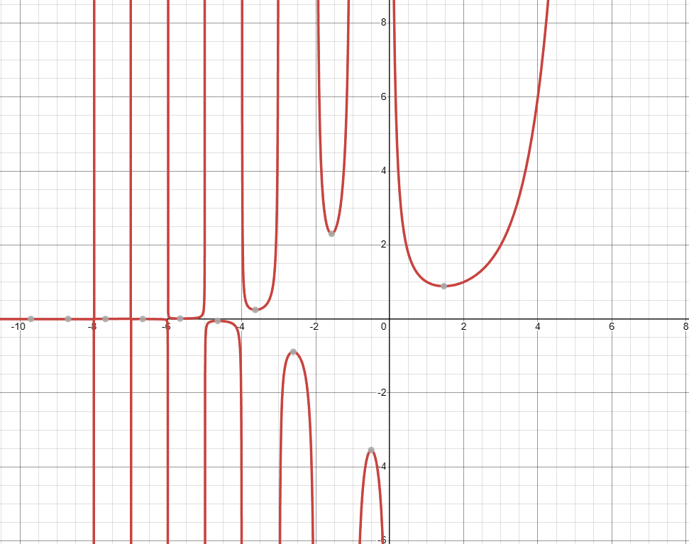
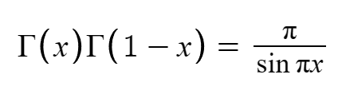
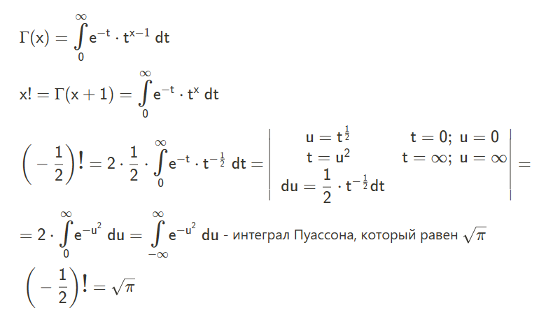
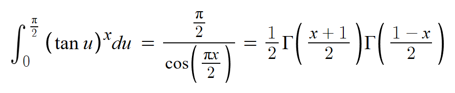
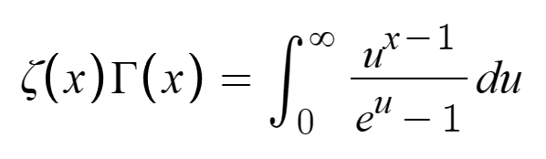

В математике существует огромное можество разных функций, интересных и не очень, страшных и красивых. Но сегодня я хочу рассказать об одной действительно красивой функции - о Гамма-функции.
Её существованию мы обязаны Леонарду Эйлеру, который ввёл её в 1729 году. Целью Эйлера было обобщение факториала на все вещественные числа, что он успешно сделал. Аналитическое продолжение Гамма-функции в результате приняло вид:

Приступим к фактам о сием математическом объекте!
Факт №1 - Точные значения
Поскольку Гамма-функция есть обобщение факториала, то неудивительно, что значения при целых неотрицательных аргументах являются точными. Акцент на знаке я сделал специально, поскольку функция в целых отрицательных значениях не определена. Это следует из ключевого свойства функций - реккурентной формулы Г(х + 1) = хГ(х).
Однако в отрицательной области она определена в промежутках между целыми значениями. Особенно при полуцелом аргументе. Благодаря реккурентной формуле достаточно вычислить одно такое значение и получить любое другое подобное. Именно это и удалось сделать с половинным аргументом:
Факт №2 - Связь с тригонометрией
Сейчас я представлю вашему вниманию график Гамма-функции:
И вот назревает вопрос, как это может быть связано с тригонометрией? На самом деле, не очень интуитивным образом. Эйлер ввёл определение Гамма-функции через бесконечное произведение, которое в итоге получило связь с представлением синуса в виде другого бесконечного произведения. Полученную связь называют формулой дополнения Эйлера. Она выглядит так:
Через синус можно получить и другие "факториальные" представления тригонометрических функций, но они будут выглядеть не очень приятно.
Факт №3 - Появление в других интегралах
В первом факте я показал, чему равно Г(1/2), но ничего не сказал о том, как так получается. На самом деле, вот что там происходит:
Этот интеграл сводится к известному интегралу Эйлера-Пуассона, который не вычисляется стандартными методами.
Вот пример неожиданного возникновения связи с Гамма-функцией:
Я не буду это доказывать сейчас, лучше оставлю ссылку на доказательство.
Кроме того, Гамма-функция имеет связь с Дзета-функцией Римана в следующем функциональном уравнении:
Вот ссылка на доказательство.